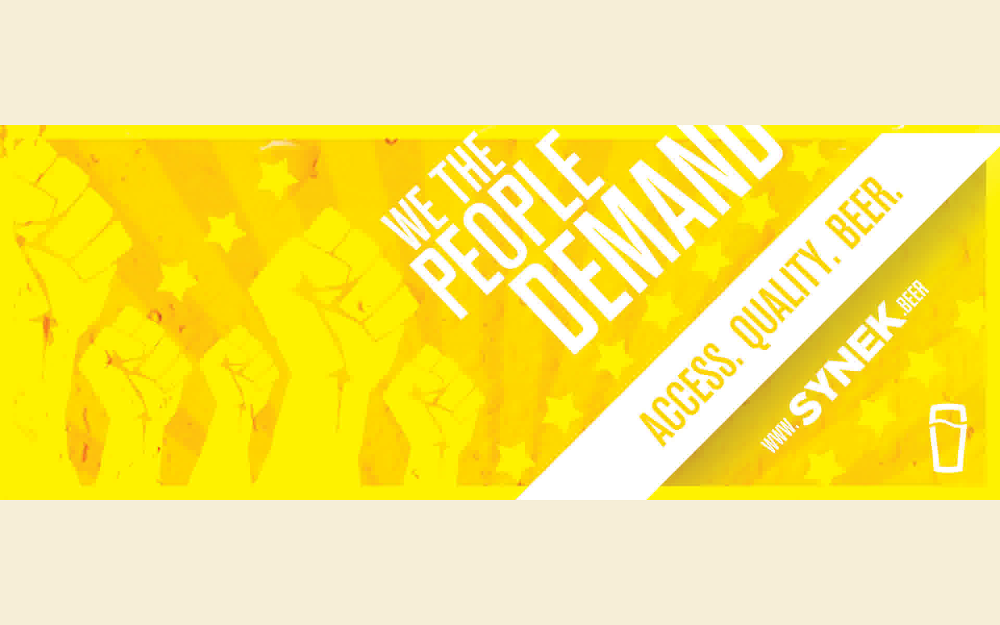

SYNEK launch campaign
Make a countertop beer system feel inevitable on a shelf and on a stage — identity, campaign, and touchpoints from Kickstarter through an international tour.
Context
SYNEK was a hardware startup selling a draft-beer experience for home counters. The product had to read as premium appliance, not gadget — and the brand had to carry a crowdfunding moment into retail and field demos across countries.
Role
Creative direction and hands-on design across identity, campaign narrative, launch film, event materials, and sales collateral. Worked with founders and agency partners to keep one visual language from pledge page to tour stop.
What we made
- Visual identity and typographic system for product + packaging
- Kickstarter and post-campaign launch creative
- Tour and trade-show touchpoints — booth, swag, demo scripts
- Film and stills direction for hero product story

Outcome
The work held together across channels long enough for the product to be felt before it was explained — the same bar as every project on this station: make the system behind the object legible at a glance.